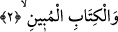
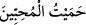
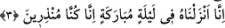

2. Apaçık olan Kitâb’a andolsun ki,
Kendilerine indirilenlere mânâları “apaçık” olan “kitaba andolsun ki”. Bu ve’l-
kitâb kelimesi, “Hâ Mîm”e mâtûftur. Zîrâ bu kelime başka bir yemin olsa bu sefer bir
şey üzerinde iki yeminin toplanması lazım gelir. “Hâ Mîm”, Kur’ân’ın tamamına isim
olduğu takdirde Kitap da Kur’ân demek olduğuna göre burada atıf sadece unvandaki
mugayerete binâen yapılmıştır.
“el-Mübîn”; yani beyn, Kitâb’ın kendilerine indirildiği toplumun onu açıkça
görmeleri demektir. Bu toplum Araplar olup Kur’ân onların lügat ve üsluplarıyla
indirilmiştir. Yahut buradaki mübîn kelimesi apaçık olmanın ötesinde hidâyet yolunu
dalâlet ve sapıklıktan ayırt ve beyân eden demek olur ki din konularında muhtaç olunan
her şeyi beyân ve izah eder demektir.
Bazıları şöyle demiştir: “Hay” ve “Kayyûm” olan Allah hakkı, hak ile bâtıl arasını
ayıran Kur’ân hakkı için. Burada “Hâ Mîm” kelimesinin hâ’sı Allah’ın “Hay” ismine
mîm ise “Kayyûm” ismine işâret etmektedir. Bu isimler şâmil oldukları birçok mânâ,
sıfat ve hakîkatlerden dolayı Allah’ın isimlerinin en büyüklerindendir. Nitekim bu
durum (el-Bakara, 2/255) olan “Âyetü’l-kürsî” de geçmişti.
Baklî’nin Arâis’inde şöyle denilmektedir: Burada hâ harfi Hz. Muhammed’e (s.a.)
mahsus olan vahiy, mim ise Muhammed (s.a.) demektir. İşte bu özel vahiy vasıtasız
doğrudan yapılan vahiydir. Bu durum ise seven ile sevgili arasında bir sır olup
başkaları buna muttalî olamazlar.
Allah Teâlâ şöyle buyuruyor: “Kuluna vahyettiğini vahyetti.” (en-Necm, 53/10)
Bazıları, bu “Hâ Mîm” kelimesini, ‘ben beni sevenleri himaye ederim’ şeklinde
yorumlamışlardır. Bazıları demişlerdir ki “__WORD__/hameytü’l-muhibbîn”; yani
“dostları/sevenleri mâsivâya yönelmekten korudum.”
Fakir (Bursevî) der ki: Bunun, “Hâ Mîm” ilâhî nimetlerin en büyüğü olan Kur’ân-ı
Kerîm’i indirmesine mukabil Allah’a hamd etmeye işâret olması muhtemeldir. Şu halde
“Hâ Mîm”, hamdin kısaltılmış şekli olup, Kur’ân’ı indirmesine mukabil hamd edilmeye
hak sâhibi olan Hakk’ın hakkı mânâsına gelir.
3. Biz onu (Kur’ân’ı) mübârek bir gecede indirdik. Çünkü biz uyarıcıyız.
“Biz onu” apaçık olan Kur’ân’ı “mübârek bir gecede” Kadir gecesinde “indirdik”
Bu ifâde yemînin cevabıdır. Allah Teâlâ Kur’ân-ı Kerîm’i Ramazan ayında kadir
gecesinde Levh-i Mahfûz’dan birinci kat semâdaki beyt-i izzete toptan indirmiş. Cebrâil